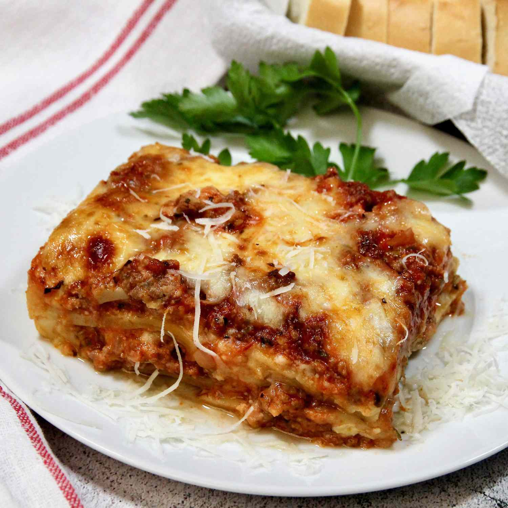

Lasagna recipe

Homemade Lasagna
This is my mom's special homemade lasagna recipe with a meaty,
made-from-scratch tomato sauce and a deliciously cheesy filling.
Ingredients
- meat
- onion
- canned tomatos
- fresh herbs
- sugar
- spices and seasonings
- noodles
- cheese
- eggs
Steps
- Cook the meat: Cook the ground meat in a skillet until browned and crumbly.
Add the onion and continue cooking until it's translucent. Stir in the canned tomato
products, half of the parsley, garlic, basil, 1.5 teaspoons of salt, oregano, and sugar.
- Cook the noodles: Boil the lasagna noodles in lightly salted water until
they're al dente.
- Make the cheese layer: Mix cottage cheese, Parmesan cheese, eggs,
the remaining parsley, the remaining salt, and pepper in a bowl.
- Assemble the lasagna: Layer the ingredients according to the recipe (starting
with sauce and ending with mozzarella) until the lasagna is assembled.
- Bake the lasagna: Cover with foil and bake in the preheated oven for about half
an hour. Remove the foil and continue baking until the top is golden brown.